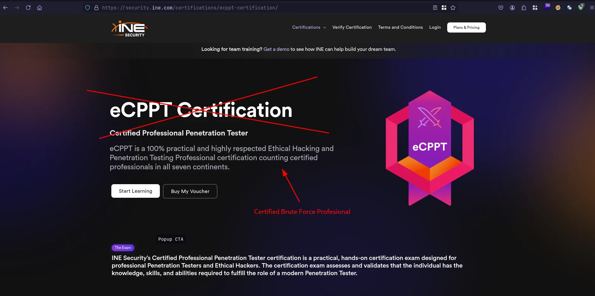
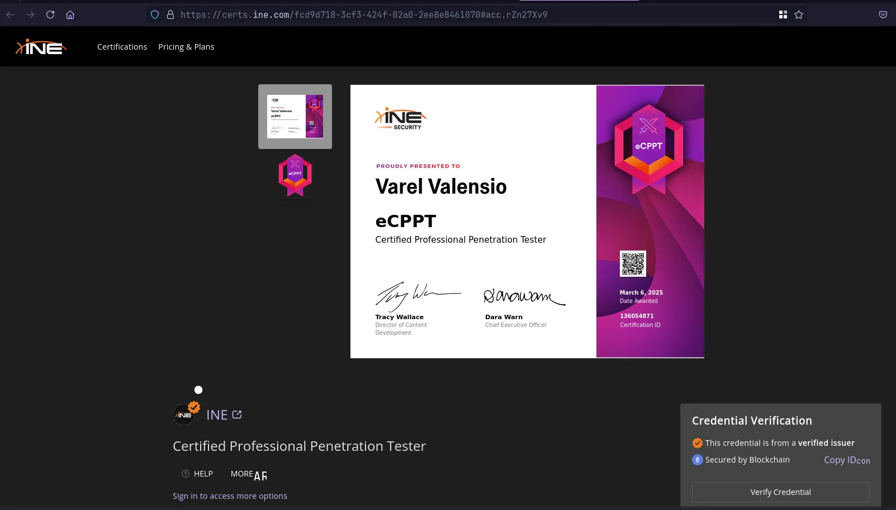

My Honest Review of the eWPTXv3 Certification - Don’t Take It?

Hello guys, I hope you are okay and healthy always. It’s been a long time since I wrote an article on this medium of mine. In this article, I will try to share my review of the certification that I took right on March 6, 2025 yesterday. I bought this certification because of the discount plus I was quite interested — maybe you could say obsessed — with Active Directory Penetration Testing. If I’m not mistaken, the discount was quite steady, because from the price of $599 it dropped to $499, then another 50% discount, so it was around $199.50.
Before going into the discussion, it would be nice if we first understand the mode or style of this eCPPTv3 exam. Different from eCPPTv2, for version 3 we get multiple choice exams and access to labs like eJPT. This is quite annoying, because if your connection is not stable, the machine will be less stable too.
-
Let’s start from the issues that exist in this certification: starting from defective tools, old machines, and connection problems.
-
To the point, I quite hate that the exam is like eJPTv2, because the attack machine is through the browser. Why not like eCPPTv2 using VPN to do the exam? It is very complicated when the network is unstable, and the attackbox machine is also unstable. Sometimes we also cannot copy and paste from outside the machine into it, but sometimes it can — quite strange and annoying.
-
Flawed tools — for example, my problem yesterday: I got crackmapexec which is quite flawed as it cannot be used for LDAP enumeration, and inevitably I used ldapsearch. In addition, the exploitation tools on Windows are also incomplete, in addition to evil-winrm, you can’t run it directly, you have to use docker, which is weird hahaha. I guess to the second DC first then to the main DC hehehe (weird but you’ll get it).
-
This is arguably a professional brute force certification. Why is that? Well, our work in this certification — besides exploiting Active Directory — is brute force hahaha. You could say that if you don’t do hash cracking, you won’t pass hahaha.
Tips Tips Tips Tips!!!
- Learn about Active Directory penetration testing such as AS-REP Roasting, Kerberoasting, and other attacks.
- Learn Basic Privilege Escalation on Linux and Windows and perform privilege escalation on Windows Active Directory.
- When cracking passwords, especially in hash cracking, use all the wordlists in the Desktop folder (this is very helpful) if I’m not mistaken there are wordlists (common_corporate_passwords.lst, seasons.txt, months.txt, xato-net-10-million-passwords-1000.txt, xato-net-10-million-passwords-10000.txt, rockyou.txt).
Highly used tools
Hashcat
Kerbrute
Metasploit
John The Ripper
xfreerdp
bloodhound-python
smbclient
rpcclient
Impacket

Maybe that’s my review, maybe you can say criticism hahaha, if my advice is just take it if the price is cheap, if the price is expensive don’t, you better take PJPT (lifetime validity), if eCPPTv3 is only three years, and in eCPPTv3 there is no Exploit Development, different from eCPPTv2. If there is a mistake, you can help correct it in the comments.